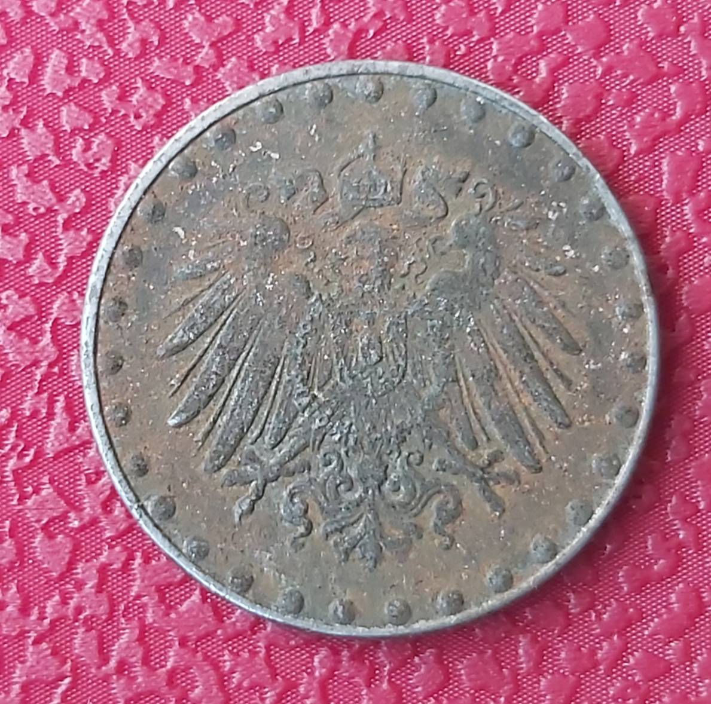

Kokiuose produktuose yra daug geležies? - Vaida Kurpienė
 Skip to content Mano paskyra Registruotis Krepšelis Facebook Instagram YouTube Straipsniai Mitybos režimas Maisto produktai Maistinės medžiagos Sveikas maisto gaminimas Patarimai Psichologija Sveikata Sveika mityba ir sportas Tikros istorijos Receptai Pusryčiams Pietums Vakarienei Užkandžiai Salotos Desertai Renginiai Parduotuvė Mitybos planai E-seminarai 100 dienų programa Knygos, E-knygos Dovanų kuponas Vaida Kurpienė Biografija Knyga „Liekna visam gyvenimui“ Atsiliepimai KontaktaiKokiuose produktuose yra daug geležies?
Pradžia / Maistinės medžiagos , Maisto produktai / Kokiuose produktuose yra daug geležies?Kokiuose produktuose yra daug geležies?
Klausimas (kalba ir stilius netaisyti): „Sveiki, norejau paklausti, kokie produktai padeda isisavinti gelezi? Nes man yra gelezies trukumas, o atrodo visus produktus vartoju, kuriuose yra daugiausiai gelezies (isskyrus kiauliena) taip pat turiu pamineti, kad valgau daug pieno produktu, gal tai turi įtakos? Nors stengiuosi juos vartoti atskirai ne su gelezies turinciais produktais “
Konsultuoja sveikos mitybos specialistė Vaida Kurpienė
Jūsų klausimas aktualus daugeliui. Ir suaugusiems, ir mažiems dažnai trūksta geležies bei krenta hemoglobino lygis kraujyje.
Kokiuose maisto produktuose yra daug geležies?
Daugiausia geležies yra šiuose maisto produktuose:
Žalios spalvos lapinėse daržovėse , pvz. špinatuose, petražolėse, dilgėlėse, garžgraistė (rukola), kopūstuose. Kuo žalia spalva ryškesnė, tamsesnė, tuo šios daržovės Jums vertingesnės.
Rugiuose bei grikiuose, tačiau nebalinkite grikių pienu, nedėkite grietinės ir neužgerkite balta kava.
Ankštiniuose augaluose , (lęšiai, pupelės), jų mūsų racione mažai, o tikrai kiekius reikėtų didinti, jie vertingi ne tik dėl geležies, bet ir dėl daugelio kitų savybių.
Burokėliuose šį vaistą nuo mažakraujystės manau visi žino, valgykite dažnai, galima ir šviežius, tačiau nederinkite su pieno produktais ir atsargiai elkitės su burokėlių sultimis.
Mėsoje , daugiausia jautienoje ir avienoje, tačiau pastaroji ypatingai riebi mėsa, kurios reikėtų vengti, geriau rinkitės kitą puikų šaltinį triušieną. Tuo tarpu kiaulienoje geležies mažai. Ypatingai geras geležies šaltinis elniena ir stirniena, tačiau mažai kas gali šia mėsa pasimėgauti. Kiek kur geležies priklauso net ne tik nuo gyvūno, bet ir nuo skerdienos dalies, pavyzdžiui vištienos krūtinėlėje geležies ypatingai mažai, o šlaunelėse- yra.
Gyvūnų subproduktuose : kiaulių, veršienos ir jautienos kepenyse yra ypatingai daug geležies ir daug toksinių medžiagų, ypatingai pramoniniu būdu augintų gyvulių kepenyse. Jei turite galimybę rinkitės jauno gyvulio, auginto namuose kepenėles. Kitu atveju kepenėlės nerekomenduojamos valgyti dažniau, kaip kartą per mėnesį. Jautienos liežuvyje yra dvigubai mažiau geležies nei jautienos kepenyse, bet dvigubai daugiau, nei jautienos mėsoje.
Pagarduose : krienuose, sezamų ir moliūgų sėklose.
Džiovinti vaisiai (pvz. džiovinti abrikosai) taip pat gali būti puikus geležies šaltinis, tačiau jų daug valgyti nevalia dėl didelio cukraus kiekio.
Kas padeda ir trukdo pasisavinti geležį?
Teigiama, kad geležies pasisavinimą iki šešių kartų padidina tuo pat metu su maistu gaunamas natūralus vitaminas C . Taigi geležies turtingą maistą geriausia valgyti su šviežiomis daržovėmis: brokoliais, lapinėmis daržovėmis, pašlakstyti citrinos ar svarainių sultimis.
Neigiamą įtaką pasisavinimui daro taninai ir fitino rūgštis. Taigi geležį trukdo kava bei juoda ir žalios arbatos. Suvalgę geležies turinčio maisto padarykite kelių valandų pertrauką, prieš gerdami arbatą ir kavą arba rinkitės žolelių arbatas.
Jūs teisingai spėjate, kad geležies pasisavinimą trikdo per didelis pieno produktų kiekis. Labai dažnai žmonės burokėlius valgo su sūriu ar grietine, grikius gardina grietine, o špinatus su varške, o jautienos kepsnio pietus užgeria kava su pienu. Tokiu atveju suvalgote daug geležies, tačiau jos tik mažą dalį pasisavinate.
Pakoreguokite savo mitybą pagal šiame straipsnyje pateiktas rekomendacijas ir po šešių mėnesių pasidarykite pakartotinius tyrimus. Rezultatai jus nustebins, nes pokytis bus akivaizdus.
Save
Pasidalinkite!
Facebook LinkedIn Pinterest El. pašto adresasPanašūs straipsniai
Pieno produktų netoleravimas: laktozė ir kazeinas
2020-08-03 | 0 komentarųMILTAI BE GLITIMO – NAUDOJIMO GIDAS IR RECEPTAI
2020-08-03 | 0 komentarųGLITIMO NETOLERAVIMAS, PRODUKTŲ PAKAITALAI IR RECEPTAI
2020-08-03 | 0 komentarų 5 komentarai naujausi seniausi most voted Inline Feedbacks Peržiūrėti visus komentarus Saulius 2018-06-26 19:02Sveiki skauda kojas tiesiog kaulus padus jau12 metu ir daugiau niekas neranda bedos tai dabar kaune nustate kad truksta gelezies daugiau hemoglobino ar ko ten visko yra kaip ka valgyti gal pasisavintu organizmas
-1 Irma 2017-08-07 14:13Sveiki, o ozku pieno suris irgi blogina gelezies pasisavinima?
0 Arūnė 2017-07-05 15:25Laba o pas mane jos per daug valgau viska bet butent to kas isvardinta minimaliai ir piena grietine ir tt lb megztu.Man 30 neštumo sav ir rodo per daug gelezies
0 Vaida Kurpienė Atsakyti Arūnė 2017-07-07 07:20Jei per daug, rekomenduojama pasitarti su gydytoju.
0 Gintare 2016-11-07 16:14Sveiki, rasote atsargiai elgtis su burokeliu sultimis. Mano gelezies atsargos yra ypac mazos (feritinas), papildai sunkiai padeda( laukiuosi), todel pirma savaite kaip pradejau spaustis naturalias sultis : obuolys, pora morku ir puse burokelio (pries tai leidziu nusgaruoti eteriniams aliejmas kaip radau parasyta). Ar tokio burokeliu kiekio pakanka? Ar galiu didint ju doze iki vieno pino burokelio?
0 Sveikos mitybos planasJūsų istorija laidai su Vaida Kurpiene
Pasidalinkite savo istorija laidoje su Vaida Kurpiene ir gausite konsultaciją dėl svorio ar sveikatos bei kelių savaičių palaikymą bei daugybę dovanų.
Pildyti registracijos formą